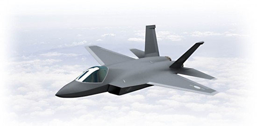

<!DOCTYPE html>
<html>
<head>
<meta charset="UTF-8">
<title> hw04 </title>
</head>

<body>

<h1> Fighter Procurement Projects Pick Up Speed  </h1>

<p> Published: <time datetime="2018-09-23T 21:35:00"> Sep. 23,2018, 21:35</time> </p>
<p> <strong>
South Korea’s mega projects to develop indigenous fighters and purchase stealth warplanes are picking up<br> pace as Seoul plans to approve crucial administrative steps at the national <em>defense acquisition program<br> committee</em> in September.</strong></p>
<blockquote cite="http://www.koreaherald.com/view.php?ud=20140831000277"> 
At the committee, top defense officials are to approve the bidding plan for the <q>KFX project</q> to develop<br> home-built fighters, and the result of negotiations for the <dfn>FX</dfn> stealth fighter procurement project will be<br> reported, sources said. The meaning of FX in military is "Fighter X (next generation fighter aircraft)"<br> (Ref:<a href="http://www.abbreviations.com/term/86334"> <cite>abbreviations.com</cite></a>).
</blockquote>

<p> After giving public notice of the bids for the KFX project this month, the <em>Defense Acquisition Program<br> Administration</em> plans to pick the preferred bidder in November and sign a contract on the system development in<br> December. Korea Aerospace Industries, the country’s sole fighter maker, is likely to be chosen as the system<br> developer.</p>

<figure>
	<figcaption>Figure 1. An artist’s rendering of KAI’s KFX. (Yonhap) </figcaption>
	
</figure>	
<p>Observers say that budgetary issues remain a major barrier to the <cite>KFX project</cite>, which seeks to deploy 120 fighters<br> after 2023 to replace South Korea’s aging fleets of F-4s and F-5s. Including both the development and mass<br> production of the envisioned fighters, the project, the country’s largest-ever defense program, is expected to cost<br> nearly <mark>20 trillion won ($19.7 billion)</mark>.</p>
<p>Seoul has sped up the KFX<a href="#footnote-1"><sup>1</sup></a> project, which was already more than a decade behind schedule, as concerns have been<br> growing over a possible shortage of fighters in the coming years. The Air Force is expected to face a shortage of<br> around 100 fighters in 2019, when almost all of the F-4s and F-5s will be decommissioned.</p>

<p>Regarding the project, there was some controversy over whether the KFX would take a single-engine platform or a<br> double-engine one. But last month, the government opted for a double-engine platform, which would increase the<br> plane’s overall capabilities despite a potential price increase.</p>
<p>Seoul also seeks to sign the “letter of acceptance” for the FX project as early as September ? a process that would<br> accelerate its acquisition of 40 radar-evading F-35 fighters from the U.S. defense firm Lockheed Martin. The FX<br> project is estimated to cost around 7.4 trillion won.</p>
<p>The <abbr title="Defense Acquisition Program Administration">DAPA</abbr> is in the final round of negotiations over the price with the U.S. government, while it is in talks over<br> technology transfer and related issues with Lockheed Martin. The FX<a href="#footnote-2"><sup>2</sup></a> project is proceeding through a government-to-<br>government foreign military sales program.</p>

<footer>
<p id="footnote-1"><sup>1</sup> It means KoreanFighterX in military.</p>
<p id="footnote-2"><sup>2</sup> FighterX.</p>
</footer>

<p> <small>&copy;By Song Sang-ho</small> (H<sub>2</sub>0) (sshluck@heraldcorp.com)</p>
<p>P.O.Box 123<br> Chalan Kanoa<br> Saipan, MP 96950
<h1>Executive Summary</h1>
<p><del>Take Note Paperie</del> <ins>Take Note Paperie</ins> is a new small sized custom printing service located in an upscale neighborhood<br> on the west side of Conway, AR. Take Note’s focus will be on creating custom, quality products for its customers.<br> This focus will not only keep the tastes of the customer in mind, but also allow for quick turnaround time as most of the<br> printing will be completed in-house. In addition, Take Note Paperie &lt;TNP&gt; plans to expand and grow with customer<br> needs in order to provide the latest trends in custom printing.</p>
<h1>Preformatted Text</h1>
<p>The pre element is ideal for text that contains important spaces and line breaks, like the bit of CSS. </p>
<pre>
<code>		abbr[title]{
			border-bottom: 1px dotted #000;
		}
</code>		
</pre>	
<h1>Ruby Text</h1>
<ruby>
Base1Base2 <rp>(</rp><rt>ruby char1ruby char2</rt><rp>)<rp>
</ruby>	  
<h1>Meter Element</h1>
<p>My expected CS222 test score: <meter value="0.95">95%</meter> </p>
</body>

<html>